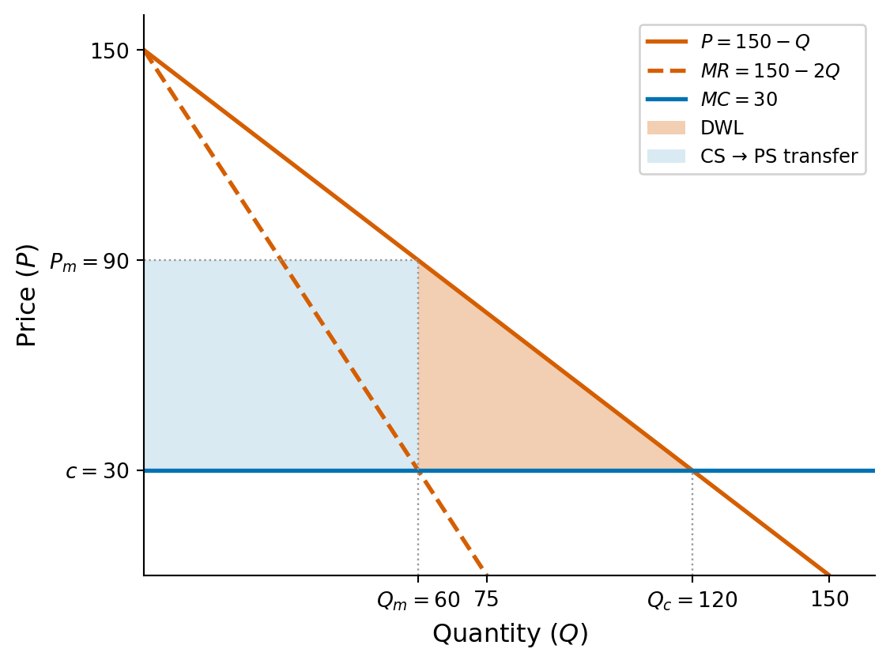

Problem Set 3: Solutions
Econ 502: Advanced Microeconomics
Part I: Benchmarks
Throughout: \(P = 150 - Q\), \(c = 30\), so \(a - c = 120\).
Part (a): Perfect competition
Under perfect competition, \(P = MC\):
\[150 - Q = 30 \quad \Longrightarrow \quad Q_c = 120, \quad P_c = \$30\]
Consumer surplus is the triangle between the demand curve and the price (see figure below):
\[CS_c = \frac{1}{2}(150 - 30)(120) = \$7{,}200\]
Producer surplus is zero (\(P = MC\) with constant marginal cost).
\[\boxed{P_c = \$30, \quad Q_c = 120, \quad CS_c = \$7{,}200, \quad TS_c = \$7{,}200}\]
Part (b): Monopoly
Total revenue: \(TR = (150 - Q)Q = 150Q - Q^2\). Marginal revenue:
\[MR = 150 - 2Q\]
Setting \(MR = MC\):
\[150 - 2Q = 30 \quad \Longrightarrow \quad Q_m = 60, \quad P_m = 90\]
\[\pi_m = (90 - 30)(60) = \$3{,}600\]
\[CS_m = \frac{1}{2}(150 - 90)(60) = \$1{,}800\]
\[TS_m = CS_m + \pi_m = 1{,}800 + 3{,}600 = \$5{,}400\]
\[DWL = TS_c - TS_m = 7{,}200 - 5{,}400 = \$1{,}800\]
This equals the triangle: \(\frac{1}{2}(P_m - c)(Q_c - Q_m) = \frac{1}{2}(60)(60) = \$1{,}800\).
\[\boxed{Q_m = 60, \quad P_m = \$90, \quad \pi_m = \$3{,}600, \quad CS_m = \$1{,}800, \quad DWL = \$1{,}800}\]
Part II: Price Competition
Part (c): Bertrand
With \(n \geq 2\) firms competing on price, the Nash equilibrium is:
\[\boxed{p_1 = p_2 = \cdots = p_n = c = 30}\]
This replicates the perfectly competitive outcome: \(P = 30\), \(Q = 120\), zero profits.
Why? Suppose all firms charge some \(p > c\). Any single firm can capture the entire market by cutting its price to \(p - \epsilon\), roughly multiplying its profit. This undercutting incentive continues until price is driven down to marginal cost. At \(p = c\), no firm can profitably deviate: raising the price loses all customers, and lowering it means selling below cost.
This is the Bertrand paradox: just two firms are enough to eliminate all market power and reproduce the competitive outcome.
Part III: Quantity Competition
Part (d): Cournot duopoly (\(n = 2\))
Firm 1’s profit:
\[\pi_1 = (150 - q_1 - q_2)q_1 - 30q_1 = (120 - q_1 - q_2)q_1\]
First-order condition:
\[\frac{\partial \pi_1}{\partial q_1} = 120 - 2q_1 - q_2 = 0\]
Best response function:
\[\boxed{q_1^*(q_2) = 60 - \frac{q_2}{2}}\]
By symmetry, \(q_2^*(q_1) = 60 - q_1/2\). In the symmetric equilibrium \(q_1 = q_2 = q^*\):
\[q^* = 60 - \frac{q^*}{2} \quad \Longrightarrow \quad q^* = 40\]
\[Q^* = 80, \qquad P^* = 70, \qquad \pi^* = (70 - 30)(40) = \$1{,}600\]
\[\boxed{q^* = 40, \quad P^* = \$70, \quad \pi^* = \$1{,}600 \text{ per firm}}\]
Part (e): Cournot with \(n\) firms
Firm \(i\) maximizes:
\[\pi_i = \left(150 - q_i - \sum_{j \neq i} q_j\right)q_i - 30q_i\]
First-order condition:
\[120 - 2q_i - \sum_{j \neq i} q_j = 0\]
In a symmetric equilibrium, \(q_j = q^*\) for all \(j\), so \(\sum_{j \neq i} q_j = (n-1)q^*\):
\[120 - 2q^* - (n-1)q^* = 0 \quad \Longrightarrow \quad 120 = (n+1)q^*\]
\[\boxed{q^* = \frac{120}{n+1}}\]
Part (f): Convergence
Remember \(c=30\) and: \[ q^* = \frac{120}{n+1}, \quad P^* = 150-nq^*, \quad \pi^* = (P^* - c)q^*, \quad \mu = \frac{P^*}{c}\]
| \(n\) | Per-firm output (\(q^*\)) | Price (\(P^*\)) | Per-firm profit (\(\pi^*\)) | Markup (\(\mu\)) |
|---|---|---|---|---|
| 1 | 60 | \(\$90\) | \(\$3{,}600\) | \(3.00\) |
| 2 | 40 | \(\$70\) | \(\$1{,}600\) | \(2.33\) |
| 5 | 20 | \(\$50\) | \(\$400\) | \(1.67\) |
| 10 | \(10.9\) | \(\$40.9\) | \(\$119\) | \(1.36\) |
| 50 | \(2.35\) | \(\$32.9\) | \(\$6.8\) | \(1.09\) |
As \(n\) gets large, price gets closer to marginal cost (\(P^* \to 30\)) and the markup \(\mu\) approaches 1, replicating the competitive outcome.
Part IV: Welfare
Part (g): Deadweight loss
DWL is the triangle between the demand curve and the price, from \(Q^*\) to \(Q_c\):
\[DWL = \frac{1}{2}(P^* - c)(Q_c - Q^*)\]
Note that \[ Q^* = nq^* = \frac{120n}{n+1} \]
Since \(P^* = 150 - Q^*\), we can write:
\[P^* = 150 - \frac{120n}{n+1} = \frac{150 + 30n}{n+1}\]
Therefore:
\[DWL = \frac{1}{2}\left(\frac{150 + 30n}{n+1} - 30\right)\left(120 - \frac{120n}{n+1}\right) = \frac{7{,}200}{(n+1)^2}\]
Comparison:
- Monopoly (\(n = 1\)): \(DWL = 7{,}200/4 = \$1{,}800\)
- Cournot duopoly (\(n = 2\)): \(DWL = 7{,}200/9 = \$800\)
Going from monopoly to duopoly cuts the DWL by more than half. The DWL shrinks as \(1/(n+1)^2\), so adding more firms reduces welfare loss rapidly. By \(n = 5\), DWL is only \(\$200\) (compared to \(\$1{,}800\) under monopoly).